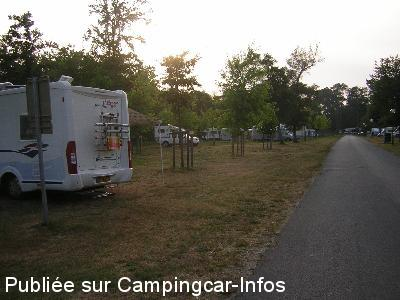
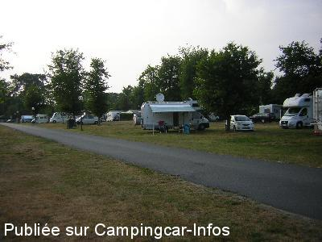
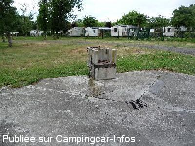
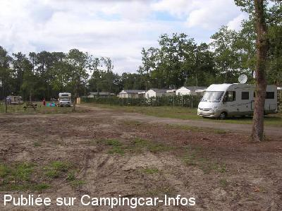
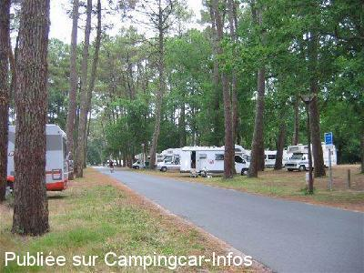
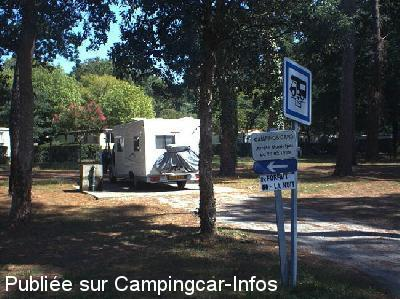

ASN = Aire de services avec stationnement nuit possible de :
LÉON
(N° 478)
Accès/adresse :
Route de Puntaou D409
40550 LÉON
40550 LÉON
Latitude : (Nord) 43.88379° Décimaux ou 43° 53′ 1′′
Longitude : (Ouest) -1.31784° Décimaux ou -1° 19′ 4′′
Tarif : 2015
Stationnement, services : 11 à 12 €
Horodateur monnayeur
Type de borne : EURO-RELAIS
Services :


Douches extérieures
Tous commerces
Location bateaux et pédalos
Autres informations :
Ouverte du 01/06 au 31/10
150 emplacements
Tel Office du Tourisme : +33(0)558 487 603
http://www.ot-leon.fr

Le 31/07/2013 par fred audenge

Le 31/07/2013 par

Le 08/08/2012 par cathare

Le 19/07/2009 par Thierry022

Le 26/08/2008 par JPL

Le 28/10/2007 par vagabond57
de
ixeo23
le 06/07/2015 :
de passage mardi 23 juin 2015; aire propre conforme aux commentaires ci-dessous , attention aux branches basses; nous avons toutefois fait demi-tour car dès notre arrivée avons été assailli par de gros insectes volant.Nous nous sommes dirigés sur l'aire du vieux boucau
de passage mardi 23 juin 2015; aire propre conforme aux commentaires ci-dessous , attention aux branches basses; nous avons toutefois fait demi-tour car dès notre arrivée avons été assailli par de gros insectes volant.Nous nous sommes dirigés sur l'aire du vieux boucau
de
pbl
le 28/06/2015 :
Comment rien autour ? Cet endroit est sympa et permet des randonnées en vélo et d'autres loisirs. Seul petit reproche : pour ce tarif, quelques bornes électriques seraient bienvenues.
Comment rien autour ? Cet endroit est sympa et permet des randonnées en vélo et d'autres loisirs. Seul petit reproche : pour ce tarif, quelques bornes électriques seraient bienvenues.
de
sybrub
le 28/04/2015 :
Nous y sommes retournés et y avons passé une nuit. Le tarif de la nuitée est passée à 11€ (stationnement et eau). À ce prix là, à cette époque de l'année, je trouve que ce n'est pas donné car rien autour, contrairement à l'été.
Nous y sommes retournés et y avons passé une nuit. Le tarif de la nuitée est passée à 11€ (stationnement et eau). À ce prix là, à cette époque de l'année, je trouve que ce n'est pas donné car rien autour, contrairement à l'été.
de
fred audenge
le 31/07/2013 :
Très belle aire à recommander. 10,00 euros service et stationnement, c'est correct. Eh oui, il fait chaud et il y a des moustiques. C'est la nature non? Petit bémol, la vitesse excessive de beaucoup de véhicules qui passent sur la petite route desservant l'aire. La plupart sont des locaux. Je suis désolé, mais qui dit aire pour camping-cars, dit aussi, enfants, piètons, cyclistes, jeux de ballons, animaux, etc.. La municipalité devrait réfléchir à la nécessitété d'installer des ralentisseurs avant qu'un drame ne se produise. Certains véhicules m'ont fait frissonner à leur passage!
Très belle aire à recommander. 10,00 euros service et stationnement, c'est correct. Eh oui, il fait chaud et il y a des moustiques. C'est la nature non? Petit bémol, la vitesse excessive de beaucoup de véhicules qui passent sur la petite route desservant l'aire. La plupart sont des locaux. Je suis désolé, mais qui dit aire pour camping-cars, dit aussi, enfants, piètons, cyclistes, jeux de ballons, animaux, etc.. La municipalité devrait réfléchir à la nécessitété d'installer des ralentisseurs avant qu'un drame ne se produise. Certains véhicules m'ont fait frissonner à leur passage!
de
mimi
le 22/07/2013 :
Aire bien située mais peu de places à l ombre
paiement ticket horodateur et un agent passe pour vérifier les tickets
de nombreux moustiques du au courant d huchet et lac
tres bon restaurant _ toilettes et douches ext tres pratiques mais malheureusement pas de branch elec possible malgré le prix !
Aire bien située mais peu de places à l ombre
paiement ticket horodateur et un agent passe pour vérifier les tickets
de nombreux moustiques du au courant d huchet et lac
tres bon restaurant _ toilettes et douches ext tres pratiques mais malheureusement pas de branch elec possible malgré le prix !
de
Mariné corine
le 29/08/2012 :
J'ai passer une nuit sur cette aire le 17 août 2012. Journée de très haute chaleur, vehicule en plein soleil toute la journée la nuit à été intenable dans le véhicule, aire très propre et agréable. 10€ la nuité par horodateur dommage qu'il n'y ai pas d'ombre, pas de borne d'électricité. Le lac est très agréable pour se baigner. Je ne pense pas y retourner de si tôt. Pour 1€ de plus il y a tout ce qu'il faut à moliets et maa, les commerces la plage, l'ombre l'électricité.manque seulement les douches.
J'ai passer une nuit sur cette aire le 17 août 2012. Journée de très haute chaleur, vehicule en plein soleil toute la journée la nuit à été intenable dans le véhicule, aire très propre et agréable. 10€ la nuité par horodateur dommage qu'il n'y ai pas d'ombre, pas de borne d'électricité. Le lac est très agréable pour se baigner. Je ne pense pas y retourner de si tôt. Pour 1€ de plus il y a tout ce qu'il faut à moliets et maa, les commerces la plage, l'ombre l'électricité.manque seulement les douches.
de
cathare
le 08/08/2012 :
De passage le 11 juin 2012 le prix est passé à 12€ vue son état et son AS nous préférons continuer sur Soustons ou Vieux boucau ou pour le même prix le cadre est nettement supérieur.
De passage le 11 juin 2012 le prix est passé à 12€ vue son état et son AS nous préférons continuer sur Soustons ou Vieux boucau ou pour le même prix le cadre est nettement supérieur.
de
serge34
le 26/07/2012 :
De passage en juillet, très calme, les commentaires précédents restent de vigueur.
De passage en juillet, très calme, les commentaires précédents restent de vigueur.
de
vaurien60
le 17/11/2011 :
bonjour
Au mois d'aout 2011, aire pratique et calme, cela dit mieux vaut éviter de se stationner le long du grillage du camping, les campeurs aussi sont source de nuisances....Pratique, cette aire (trés vaste) dispose de tables de pique nique et toilettes prés de la plage (du lac). Belles ballades à faire en vélo et en famille, quelques (petits) commerces a proximité et le bourg (Léon) à 1km environ. Cela dit pour la baignade c'est pas super (sauf pour les trés petits). Services assez pratiques et tarifs dasn la norme. Une aire sans grande surprise mais agréable surtout avec enfants en bas âge..!
bonjour
Au mois d'aout 2011, aire pratique et calme, cela dit mieux vaut éviter de se stationner le long du grillage du camping, les campeurs aussi sont source de nuisances....Pratique, cette aire (trés vaste) dispose de tables de pique nique et toilettes prés de la plage (du lac). Belles ballades à faire en vélo et en famille, quelques (petits) commerces a proximité et le bourg (Léon) à 1km environ. Cela dit pour la baignade c'est pas super (sauf pour les trés petits). Services assez pratiques et tarifs dasn la norme. Une aire sans grande surprise mais agréable surtout avec enfants en bas âge..!
de
gege31
le 03/10/2011 :
J'ajouterais que la commune est (faut le remarquer) sympa car il est permis de stationner au bord du lac dans la journée....
Certaines communes un peu plus au Sud interdisent carrement le stationnement PARTOUT!(Une commence par Cap, et l'autre par Seign ...)
J'ajouterais que la commune est (faut le remarquer) sympa car il est permis de stationner au bord du lac dans la journée....
Certaines communes un peu plus au Sud interdisent carrement le stationnement PARTOUT!(Une commence par Cap, et l'autre par Seign ...)
de
sylvain
le 01/07/2011 :
Belle aire à 100m du lac et de ses amenagements.Commerces,jeux pour enfants,centre nautique à proximité.Centre de Leon à 800m.Le tarif me semble justifié par rapport au lieu.Autrement vous avez le camping à coté pour 4 fois plus cher en saison......
Belle aire à 100m du lac et de ses amenagements.Commerces,jeux pour enfants,centre nautique à proximité.Centre de Leon à 800m.Le tarif me semble justifié par rapport au lieu.Autrement vous avez le camping à coté pour 4 fois plus cher en saison......
de
Noel 28
le 15/08/2010 :
Nous sommes passés sur cette aire très sympa : table pour manger, jeux pour enfants, lac avec plage surveillée, calme. Sur quelques emplacements, risque d'ensablement. Tarif 8€ la nuit de 22H à 9H, une dame passe le lendemain vers 9h30 pour voir si on a payé. Idéale pour les enfants. §
Nous sommes passés sur cette aire très sympa : table pour manger, jeux pour enfants, lac avec plage surveillée, calme. Sur quelques emplacements, risque d'ensablement. Tarif 8€ la nuit de 22H à 9H, une dame passe le lendemain vers 9h30 pour voir si on a payé. Idéale pour les enfants. §